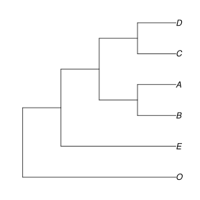
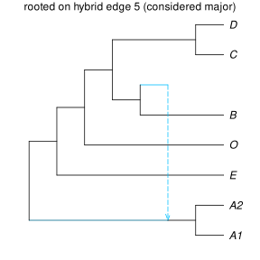

Comparing and manipulating networks
Examples below use networks available from the package. We can load them as follows. astraltree is a tree estimated using ASTRAL, net0 is a network estimated using SNaQ under the constraint of 0 reticulation, so it's also a tree, and net1 is a network estimated under the constraint of 1 reticulation, so not a tree.
All of them are to be interpreted as semidirected networks, because their root is not identifiable by the method used to estimate them. This affects how we want them.
astralfile = joinpath(dirname(pathof(PhyloNetworks)), "..","examples","astral.tre")
astraltree = readmultinewick(astralfile)[102] # 102th tree = last tree here
net0 = readnewick(joinpath(dirname(pathof(PhyloNetworks)), "..","examples","net0.out"))
net1 = readnewick(joinpath(dirname(pathof(PhyloNetworks)), "..","examples","net1.out"))Robinson-Foulds distance for trees
Do the 2 trees astraltree and net0 have the same topology, unrooted? We can calculate the Robinson-Foulds distance between them, using a function that extends the Robinson-Foulds distance to general networks (more on this below).
julia> hardwiredclusterdistance(astraltree, net0, false)0
The last option false is to consider topologies as unrooted. The RF distance is 0, so the two unrooted topologies are the same. If we had considered them as rooted, with whatever root they currently have in their internal representation, we would find a difference:
julia> hardwiredclusterdistance(astraltree, net0, true)5
Re-rooting trees and networks
We can re-root our networks with the outgroup, O, and then re-compare the ASTRAL tree and the SNaQ tree as rooted topologies (and find no difference):
julia> rootatnode!(astraltree, "O")HybridNetwork, Rooted Network 10 edges 11 nodes: 6 tips, 0 hybrid nodes, 5 internal tree nodes. tip labels: E, O, C, D, ... (O,(((C,D)100.0:3.029,(B,A)100.0:1.324)100.0:0.464,E));julia> rootatnode!(net0, "O")HybridNetwork, Rooted Network 10 edges 11 nodes: 6 tips, 0 hybrid nodes, 5 internal tree nodes. tip labels: C, D, B, A, ... (O,(E,((B,A):1.396,(C,D):10.0):0.485));julia> hardwiredclusterdistance(astraltree, net0, true)0
using PhyloPlots, RCall
R"name <- function(x) file.path('..', 'assets', 'figures', x)"
R"svg(name('net0_O.svg'), width=4, height=4)"
R"par"(mar=[0,0,0,0])
plot(net0);
R"dev.off()"
Note that we use the possibilities of RCall to save the plot. We only show these commands once, but they will be run behind the scene each time a plot is called.
After trees/networks are rooted with a correct outgroup, their visualization is more meaningful.
Networks can be re-rooted at a given node or along a given edge. Get help (type ?) on the functions rootatnode! and rootonedge! for more info. There are examples in the Network support section.
If the network is plotted with crossing edges, you may identify ways to rotate the children edges at some nodes to untangle some crossing edges. This can be done using the function rotate!. See an example in the Network support section, or type ? then rotate!.
Does the root conflict with the direction of a reticulation?
With 1 hybridization or more, the direction of hybrid edges constrain the position of the root. The root cannot be downstream of hybrid edges. Any hybrid node has to be younger than, or of the same age as both of its parents. So time has to flow "downwards" of any hybrid node, and the root cannot be placed "below" a hybrid node. An attempt to re-root the network at a position incompatible with hybrid edges will fail, with a RootMismatch error. To show an example, let's use the network below. We plotted the edge numbers, because we will want to use them later to place the root.
net7taxa = readnewick("(C,D,((O,(E,#H7:::0.196):0.314):0.664,(((A1,A2))#H7:::0.804,B):10.0):10.0);")
plot(net7taxa, showgamma=true, showedgenumber=true, tipoffset=0.2);
Let's imagine that A1 and A2 are our outgroups, and we estimated the network above. According to this network, time must flow from the hybrid node towards A1 and A2. So any attempt to reroot the network with A1 as outgroup, or with A2 as outgroup, or with the A clade (on edge 11), will fail with a RootMismatch error:
rootatnode!(net7taxa, "A1"); # ERROR: RootMismatch: non-leaf node 5 had 0 children. ...
rootatnode!(net7taxa, "A2"); # ERROR: RootMismatch (again)
rootonedge!(net7taxa, 10); # ERROR: RootMismatch (again)In this case, however, it is possible to root the network on either parent edge of the hybrid node. These edges have numbers 12 and 5, based on the plot above. We get these 2 rooted versions of the network:
R"layout(matrix(1:2,1,2))";
rootonedge!(net7taxa, 11);
rotate!(net7taxa, -5)
plot(net7taxa, showgamma=true, tipoffset=0.2, shownodenumber=true);
R"mtext"("rooted on hybrid edge 11 (major)", line=-1)
rootonedge!(net7taxa, 5);
plot(net7taxa, showgamma=true, tipoffset=0.2);
R"mtext"("rooted on hybrid edge 5 (minor)", line=-1);
On the second plot, the A clade does not appear to be an outgroup, but this is just because the plot follows the major tree primarily, based the major hybrid edges (those with γ>0.5). We can display the exact same network differently, by changing the γ inheritance values to invert the major/minor consideration of the hybrid edges.
net7taxa.edge[5] # just to check that it's one of the 2 hybrid edges of interest
setgamma!(net7taxa.edge[5], 0.501) # switch major/minor edges
plot(net7taxa, tipoffset=0.2); # not showing gamma values, because we changed them artificially
R"mtext"("rooted on hybrid edge 5 (considered major)", line=-1);
Conclusion, in this particular example: it is possible to re-root the network to a place where the A clade is indeed an outgroup. But it did require some care, and we discovered that there are 2 acceptable rooting options. The first is more plausible, if we think that the species tree is the major tree, meaning that any gene flow or introgression event replaced less than 50% of the genes in the recipient population.
In other cases, it may not be possible to re-root the network with a known outgroup. It would be the case if A1 was the only outgroup, and if A2 was an ingroup taxon. In such a case, the outgroup knowledge tells us that our estimated network is wrong. One (or more) reticulation in the network must be incorrect. Its placement might be correct, but then its direction would be incorrect.
Extracting the major tree
We can also compare the networks estimated with h=0 (net0) and h=1 (net1):
julia> rootatnode!(net1, "O"); # the ; suppresses screen outputjulia> hardwiredclusterdistance(net0, net1, true)2
plot(net1, showgamma=true);
They differ by 2 clusters: that's because A is of hybrid descent in net1 (descendant of each hybrid edge), not in net0.
To beyond this hybrid difference, we can extract the major tree from the network with 1 hybridization, that is, delete the hybrid edge supported by less than 50% of genes. Then we can compare this tree with the ASTRAL/SNaQ tree net0.
julia> tree1 = majortree(net1); # major tree from net1julia> hardwiredclusterdistance(net0, tree1, true)0
They are identical (at distance 0), so here the species network with 1 hybrid node is a refinement of the estimated species tree (this needs not be the case always).
Hardwired-cluster distance
Is net1, the SNaQ network with 1 hybrid node, the same as the true network, the network that was initially used to simulate the data?
(Digression on this example's data: gene trees were simulated under the coalescent along some "true" network, then 500 base-pair alignments were simulated along each gene tree with the HKY model, gene trees were estimated from each alignment with RAxML, and these estimated gene trees served as input to both ASTRAL and SNaQ.)
The "true" network is shown below, correctly rooted at the outgroup O, and plotted with branch lengths proportional to their values in coalescence units:
julia> truenet = readnewick("((((D:0.4,C:0.4):4.8,((A:0.8,B:0.8):2.2)#H1:2.2::0.7):4.0,
(#H1:0::0.3,E:3.0):6.2):2.0,O:11.2);");plot(truenet, useedgelength=true, showgamma=true);
We can compare two networks using the hardwired-cluster dissimilarity.
- This dissimilarity counts the number of hardwired clusters present in one network but absent in the other.
- The hardwired cluster associated with an edge is the set of all tips descendant from that edge, i.e. all tips that inherited at least some genetic material from that edge.
- Each edge is associated with its hardwired cluster of descendants, and also with a "tree" tag or "hybrid" tag depending on the edge type.
When comparing level-1 networks, or tree-child networks more generally, the hardwired-cluster dissimilarity is a distance: d(N, N') = 0 exactly when N and N' have the same topology. (Cardona et al. 2009, Bai et al. Maxfield, Xu & Ané 2025). Unfortunately, this is not generally true for complex network: there are networks at hardwired-cluster 'distance' 0, that have different topologies. But no dissimilarity measure can both be fast to calculate and be a distance on the full space of phylogenetic networks (Cardona et al. 2014).
julia> hardwiredclusterdistance(net1, truenet, true) # true: nets considered as rooted4
Our estimated network is at distance 4 (not 0), so it is different from the true network (there was estimation error). The 4 cluster differences correspond to the hybrid edges in net1 (whose cluster is A), the hybrid edges in truenet (whose cluster is AB); and the parent of their minor hybrid edges: with cluster EA in net1 versus EAB in truenet.
From the plots, we see that:
- the underlying tree is correctly estimated
- the origin of gene flow is correctly estimated: E
- the target of gene flow is not correctly estimated: it was the lineage ancestral to (A,B), but it is estimated to be A only.
μ distances
The node-based μ-representation of rooted networks and the edge-based μ-representation of semidirected networks lead to μ-distances, which generalize the RF-distance on trees. See Cardona et al. (2024) and Maxfield, Xu & Ané (2025)
Each μ-representation lists a number of counts: counting the number of paths from each node / edge to each leaf (and to some/any hybrid node). From these path numbers, we can get the hardwired cluster associated to node or leaf: the tips that can be reached via 1 or more paths. So then the μ-distance is more discriminant (larger) than the hardwired-cluster distance.
For semidirected networks, the calculation of the μ-distance is much faster than the calculation of the hardwired-cluster distance, because it requires a single traversal of the network.
Again, the μ-distances are only dissimilarities generally. They are known to provided a distance, with d(N,N') = 0 exactly when N and N' share the same topology, when N and N' are tree-child rooted or semidirected networks.
julia> mudistance_rooted(net1, truenet)8
Here both networks have an edge leading to the cluster ABCDE (the stem of the clade), but these edges have different number of paths to B: only 1 path in net1 versus 2 paths in truenet. So these edges did not count towards the hardwired-cluster distance, but do count towards the rooted μ-distance now.
julia> mudistance_semidirected(net1, truenet)12
When considered as undirected, the μ-distance is greater here: this is because each edge is considered in each direction it can take if its direction may change depending on the root. To math edges between 2 networks, the edges' number of paths to taxa need to match – in both directions (unlike when the networks are considered rooted). Here, each network has 6 internal edges (after suppressing the root) and none of them match between the 2 networks.
But the distance does not depend on the root position (which may be unknown):
julia> net1_E = deepcopy(net1); rootatnode!(net1_E, "E");julia> mudistance_semidirected(net1_E, truenet) # same as with net112
and if we ignore B the μ-distance drops to 0, consistent with the 2 subnetworks being equal:
julia> net1_noB = deepcopy(net1); deleteleaf!(net1_noB, "B");julia> truenet_noB = deepcopy(truenet); deleteleaf!(truenet_noB, "B");julia> mudistance_semidirected(net1_noB, truenet_noB)0
To get the μ-representations themselves, see PhyloNetworks.node_murepresentation and PhyloNetworks.edge_murepresentation.
Displayed trees and subnetworks
We can extract all trees displayed in a network. These trees are obtained by picking one parent hybrid edge at each hybrid node, and dropping the other parent hybrid edge. We can choose to pick the "important" hybrid edges only, with heritability γ at or above a threshold. Below we use a γ threshold of 0, so we get all displayed trees:
julia> t = displayedtrees(net1, 0.0) # list of trees displayed in network2-element Vector{HybridNetwork}: HybridNetwork, Rooted Network 10 edges 11 nodes: 6 tips, 0 hybrid nodes, 5 internal tree nodes. tip labels: C, D, O, E, ... (O,(((B,A):10.0,(C,D):10.0):0.664,E)); HybridNetwork, Rooted Network 10 edges 11 nodes: 6 tips, 0 hybrid nodes, 5 internal tree nodes. tip labels: C, D, O, E, ... (O,((E,A):0.314,((C,D):10.0,B):0.664));julia> writenewick(t[1], round=true)"(O,(((B,A):10.0,(C,D):10.0):0.664,E));"julia> writenewick(t[2], round=true)"(O,((E,A):0.314,((C,D):10.0,B):0.664));"
If we decide to keep edges with γ>0.2 only, then we are left with a single tree in the list (the major tree). This is because our example has 1 hybrid node with minor γ=0.196.
julia> t = displayedtrees(net1, 0.2)1-element Vector{HybridNetwork}: HybridNetwork, Rooted Network 10 edges 11 nodes: 6 tips, 0 hybrid nodes, 5 internal tree nodes. tip labels: C, D, O, E, ... (O,(((B,A):10.0,(C,D):10.0):0.664,E));
We can also delete all "non-important" reticulations, those with a minor heritability γ below some threshold. The function below changes our network net1, as indicated by its name ending with a !.
julia> deletehybridthreshold!(net1, 0.1)HybridNetwork, Rooted Network 13 edges 13 nodes: 6 tips, 1 hybrid nodes, 6 internal tree nodes. tip labels: C, D, O, E, ... (O,((E,#H7:::0.196):0.314,((B,(A)#H7:::0.804):10.0,(C,D):10.0):0.664));
Nothing happened to our network: because its γ is above 0.1. But if we set the threshold to 0.3, then our reticulation disappears:
julia> deletehybridthreshold!(net1, 0.3)HybridNetwork, Rooted Network 10 edges 11 nodes: 6 tips, 0 hybrid nodes, 5 internal tree nodes. tip labels: C, D, O, E, ... (O,(((B,A):10.0,(C,D):10.0):0.664,E));
See also function displayednetworkat! to get the network with a single reticulation of interest, and eliminate all other reticulations.